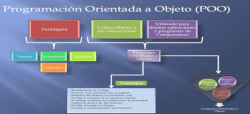

Lógica de programação
Lógica de programação é a técnica utilizada para desenvolver instruções em uma sequência para atingir determinado objetivo. É a organização e planejamento de instruções, em um algoritmo, com o objetivo de tornar viável a implementação de um programa ou software.
Python
Python é uma linguagem de programação de alto nível, ou seja, com sintaxe mais simplificada e próxima da linguagem humana, utilizada nas mais diversas aplicações, como desktop, web, servidores e ciência de dados. Saiba mais sobre ela, sua origem e principais vantagens neste guia para iniciantes.
Sistema da computação

Um sistema computacional consiste num conjunto de dispositivos eletrônicos (hardware) capazes de processar informações de acordo com um programa (software). O software mais importante é o sistema operacional, porque ele fornece as bases para a execução das aplicações, às quais o usuário deseja executar.
O que é programação orientada a objetos?
Paradigmas de programação existem para responder questões que surgem justamente do processo de pensar na abordagem que será utilizada para a solução de problemas. Enquanto uma linguagem de programação é a implementação de fato de uma ferramenta para desenvolver um software, o paradigma de programação é o modelo conceitual e o conjunto de padrões e metodologias que serão aplicadas no uso de uma linguagem para o desenvolvimento de um software.
A POO é um paradigma de programação que se propõe a abordar o design de um sistema em termos de entidades, os objetos, e relacionamentos entre essas entidades. Imagine que estamos desenhando um sistema de gerenciamento de funcionários para uma empresa: o funcionário, sob esta abordagem, será uma entidade, e ele deve pertencer a um departamento.